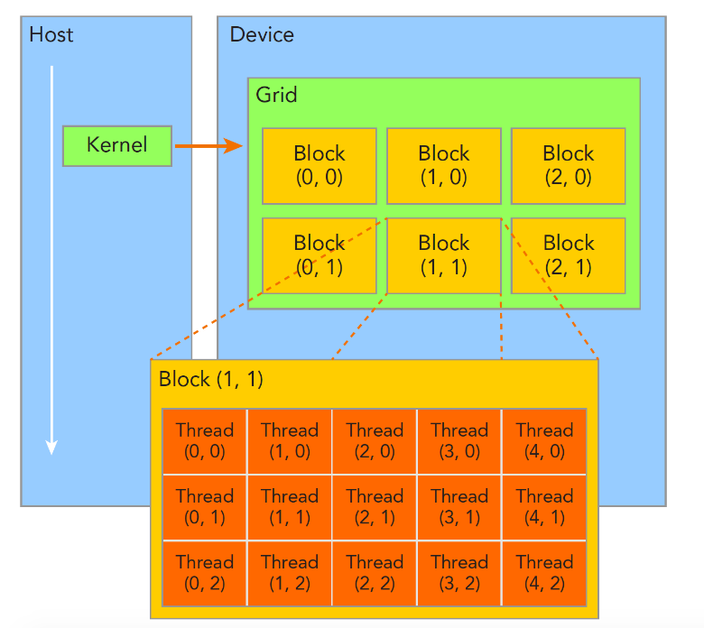
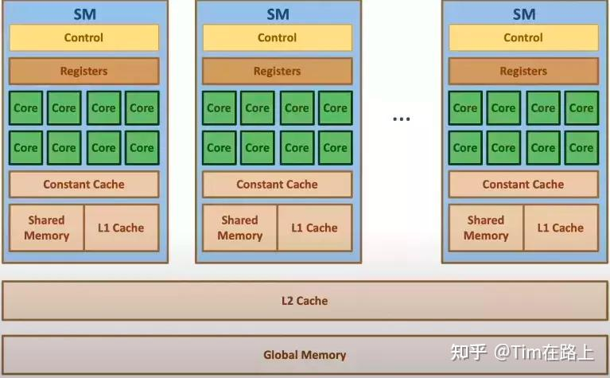

nvidia gpu结构简介和cuda编程入门
0. 前言
最近本人在写硕士大论文，需要写一些GPU相关的内容作为引言，所以在此总结一下。
1. NVIDIA GPU线程管理

CUDA的线程模型如上图，在调用一个CUDA函数时，需要定义grid和block的形状：
func<<<grid, block>>>();
在程序里定义的grid和block都是dim3类型的变量。当调用一个函数时，该函数会启动众多线程(thread)进行执行，所有的线程称为一个网格(grid)。一个grid又分为多个线程块(block)，一个block由多个线程组成。
以上内容参见：https://ther-nullptr.github.io/posts/high-performance-computing/cuda/
2. NVIDIA GPU硬件结构
以上所说的grid和block都是软件层面的逻辑编程模型，在硬件上，一个GPU由多个SM组成，每个SM内部包含多个CUDA核心，一个CUDA核心就是一个单精度浮点数计算单元。
GPU在执行时，会把一个block调度到一个SM上，然后把block中的线程划分成线程束(wrap)，每个线程束最多包含32个线程。需要注意，一个block只能被调度到一个SM上，然后warp scheduler会选择一个wrap执行。
3. CUDA逻辑线程和硬件CUDA core的调度对应关系
一个block会被调度到一个SM上，一个SM可以运行多个warps，至于具体不是很了解，感兴趣的读者可以阅读stackoverflow上的这个问题自学一下。
4. NVIDIA GPU的内存模型

这是本人论文中涉及到的部分。HBM是所有SM共享的全局显存，SRAM是每个SM中的L1 Cache和Shared Memory。GPU计算一个数据，必须先弄HBM送到SRAM中才能让每个core计算，core是不能直接读HBM的。至于Shared Memory和L1 Cache，实际上是一块内存，根据需要，将一部分分给Shared Memory，剩余部分就作为L1 Cache使用。